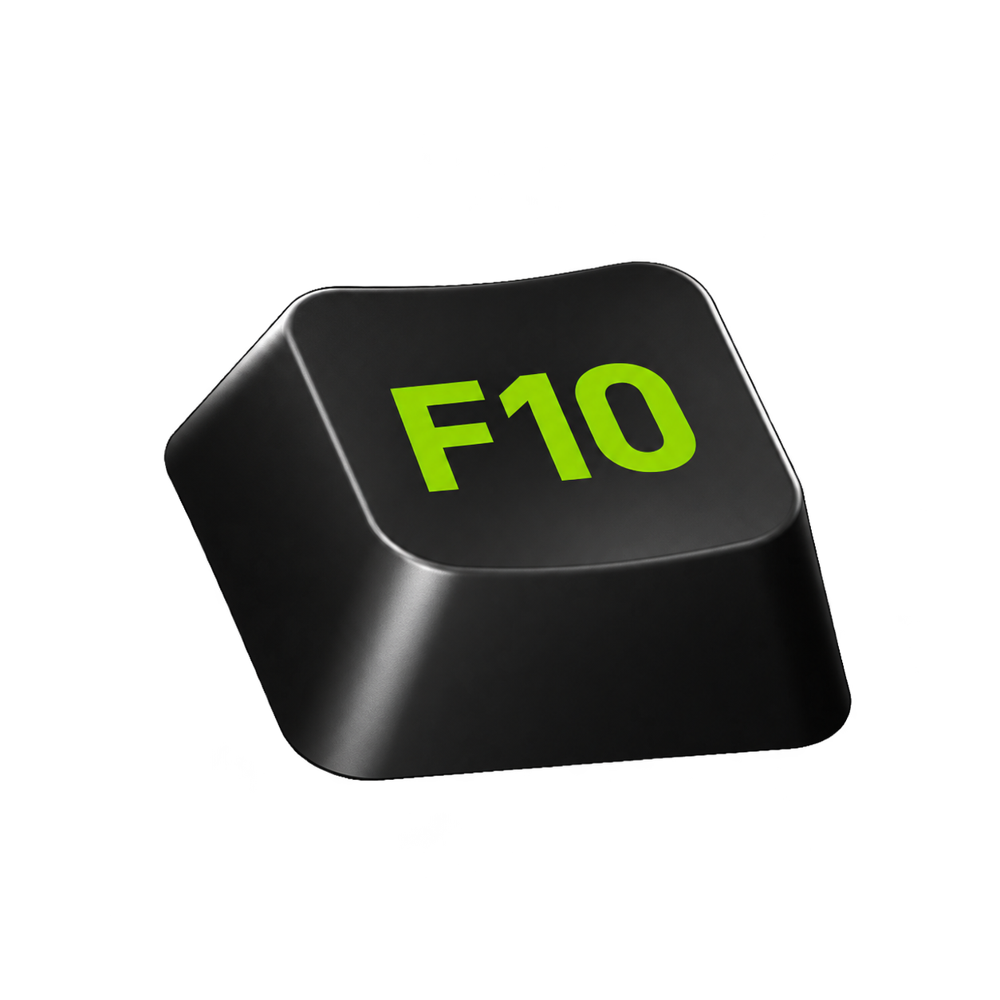

M0 review draft v4 · 22 October 2026
F10 · screens and states
Sample UI only. Nothing here records, changes F10 settings, registers shortcuts, opens media or uploads data. Review navigation and scenarios work locally; devices, folders, files and measurements are examples.
Screen
Scenario
Review saved export outcome
Review manual finalization outcome
Sample report export Download sample Export failure
Sample foreground Game Full-screen application Desktop Browser Explorer
Sample FPS data Available (144 FPS) Unavailable
Sample recovery outcome Saved recording Save folder unavailable Review recovery outcome Exit example Current pending work No pending work Saving recordings Stalled saves Save failed
State flows and review notes
Restart replay buffer? Unsaved replay history will be cleared. Saved clips stay in place. Replay will refill unless you paused it.
Cancel Restart replay buffer
Select save folder Example folders
Folder Videos / F10 D:/Clips Videos / Gameplay Cancel Select folder
Remove selected files?
You can restore these files from Windows Recycle Bin.
Cancel Move to Recycle Bin
Discard unfinished recording?
This recording’s recovery data will be permanently deleted.
Cancel Discard permanently

Force F10 to exit?
Unfinished recordings may remain incomplete or need recovery.
Keep waiting Force exit